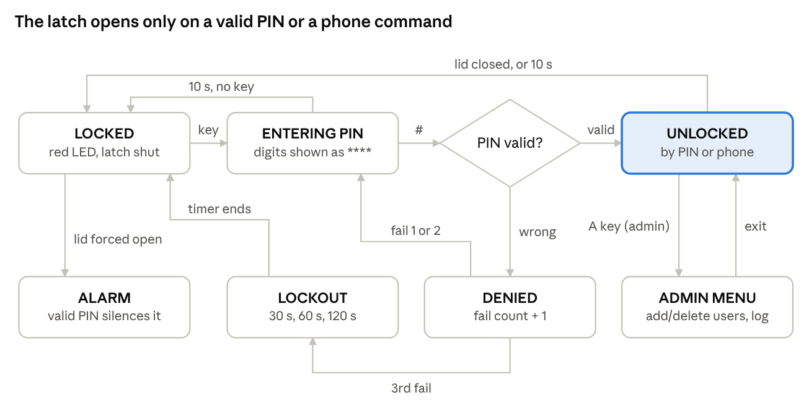
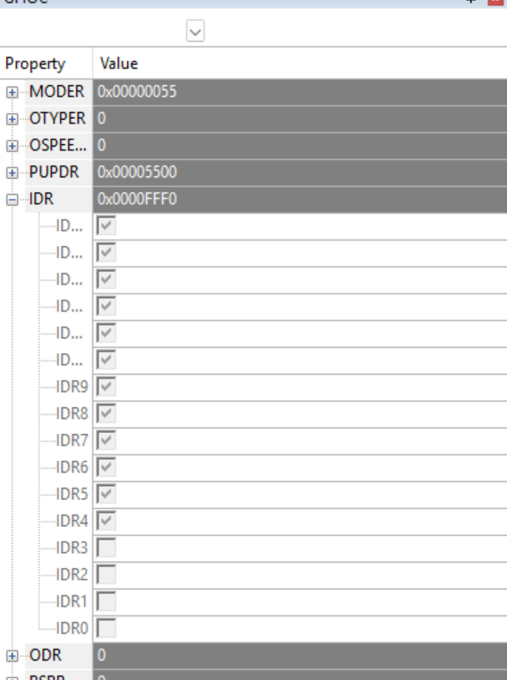
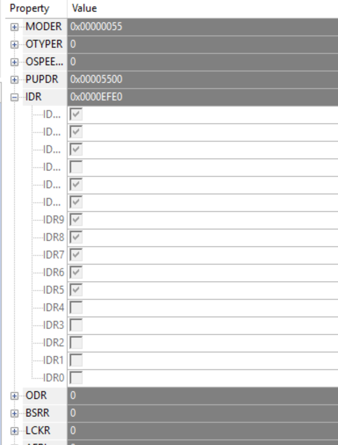
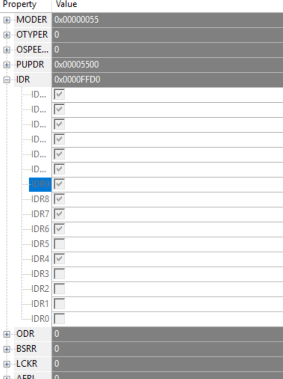
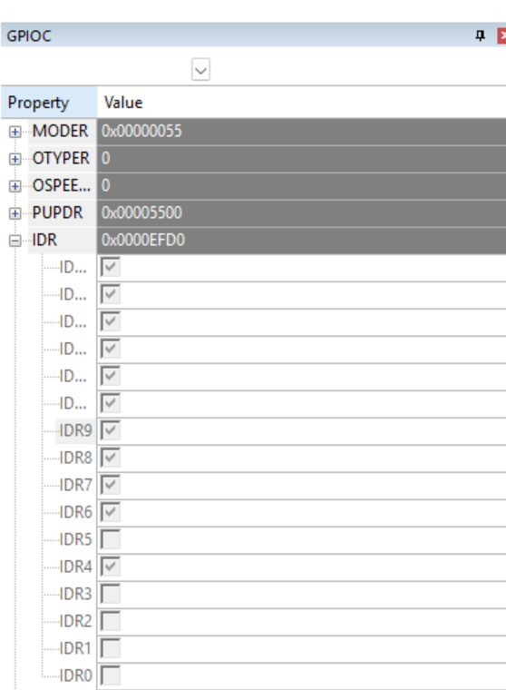

VaultLink
A Wi-Fi connected, multi-user keypad lock box on an STM32F401RE, written entirely in ARM assembly.
In progress, demo the week of November 29At a glance
| Type | Final project for ESET 349, Microcontroller Architecture, at Texas A&M. Team of 2, fall 2026. |
|---|---|
| Controller | STM32F401RE Nucleo-64 |
| Language | ARM assembly only, a course rule |
| Toolchain | Keil uVision 5 with an ST-Link debugger |
| Peripherals | 4x4 membrane keypad, 16x2 character LCD, SG90 servo latch, piezo buzzer, status LEDs, magnetic reed switch on the lid, ESP-01 Wi-Fi module |
What it does
- Each of up to 8 users has a 4 to 6 digit PIN, stored as a hash instead of the digits.
- A correct PIN moves a servo that releases the latch. The box locks itself again when the lid closes.
- Three wrong PINs lock the keypad out for 30 seconds, then 60, then 120.
- Opening the lid while the box is locked sets off an alarm.
- An admin user can add or remove users and view an access log from the keypad.
- Over Wi-Fi, the owner's phone gets a notification for every unlock, lockout or tamper alarm, and can unlock the box remotely.
Design
One STM32 runs the whole lock. The Wi-Fi module sits on a single serial port, so removing it leaves the lock working. We build the offline lock first and add Wi-Fi on top.

Lock controller
The lock is a state machine. The first two wrong PINs send the user back to try again and the third starts a lockout. A valid PIN silences the alarm.

Software choices
- No waiting in delay loops. A 1 ms SysTick interrupt keeps a millisecond counter that every timeout reads, so the keypad stays responsive while timers, the alarm and Wi-Fi run.
- Hashed PINs. Each PIN is stored as a 32-bit FNV-1a hash, which costs one XOR and one multiply per digit.
- Interrupt-driven lid sensor. The reed switch raises an external interrupt that flags a lid open or close for the state machine.
- Access log. The last 32 events are kept in a ring buffer.
Reading the keypad
The keypad's 16 keys sit where 4 row wires cross 4 column wires, and pressing a key connects one row to one column. The columns are inputs with internal pull-ups, so they read 1 when nothing is pressed. The program drives one row low at a time and reads the columns: the row being driven gives the key's row, and the column that reads 0 gives its column.
I checked why the scan has to go one row at a time. With every row driven low, all keys in the same column look identical. In the screenshots below, holding 2 or holding 5 clears the same input bit.




Pin map for the keypad
| Keypad wire | STM32 pin | Mode |
|---|---|---|
| Rows 1 to 4 | PC0 to PC3 | Outputs, driven low one at a time |
| Columns 1 to 4 | PC4 to PC7 | Inputs with pull-ups |
Status
As of November 16, 2026, the keypad interface is set up and verified on the board, and I am writing the lock logic. The finished lock box is due for its demo the week of November 29.